10 Factors
Functions and packages:
- forcats
factorfct_inorderlevelsreadr::parse_factorfct_reorderfct_relevelfct_reorder2fct_infreqfct_revfct_recodefct_lumpfct_collapse
10.1 Introduction
library(tidyverse)
library(forcats)10.2 Creating Factors
x1 <- c("Dec", "Apr", "Jan", "Mar")
month_levels <- c(
"Jan", "Feb", "Mar", "Apr", "May", "Jun",
"Jul", "Aug", "Sep", "Oct", "Nov", "Dec"
)
y1 <- factor(x1, levels = month_levels)y1 <- factor(x1, levels = month_levels)
y1
#> [1] Dec Apr Jan Mar
#> Levels: Jan Feb Mar Apr May Jun Jul Aug Sep Oct Nov Dec
sort(y1)
#> [1] Jan Mar Apr Dec
#> Levels: Jan Feb Mar Apr May Jun Jul Aug Sep Oct Nov Decx2 <- c("Dec", "Apr", "Jam", "Mar")
y2 <- factor(x2, levels = month_levels)
y2
#> [1] Dec Apr <NA> Mar
#> Levels: Jan Feb Mar Apr May Jun Jul Aug Sep Oct Nov DecNo warnings with factor. Use readr::parse_factor for warning.
y2 <- parse_factor(x2, levels = month_levels)
#> Warning: 1 parsing failure.
#> row col expected actual
#> 3 -- value in level set JamChange order of levels, e.g. first appearance:
f1 <- factor(x1, levels = unique(x1))
f1
#> [1] Dec Apr Jan Mar
#> Levels: Dec Apr Jan Mar
f2 <- x1 %>% factor() %>% fct_inorder()
f2
#> [1] Dec Apr Jan Mar
#> Levels: Dec Apr Jan Marlevels(f2)
#> [1] "Dec" "Apr" "Jan" "Mar"10.3 GSS
gss_cat
#> # A tibble: 21,483 × 9
#> year marital age race rincome partyid
#> <int> <fctr> <int> <fctr> <fctr> <fctr>
#> 1 2000 Never married 26 White $8000 to 9999 Ind,near rep
#> 2 2000 Divorced 48 White $8000 to 9999 Not str republican
#> 3 2000 Widowed 67 White Not applicable Independent
#> 4 2000 Never married 39 White Not applicable Ind,near rep
#> 5 2000 Divorced 25 White Not applicable Not str democrat
#> 6 2000 Married 25 White $20000 - 24999 Strong democrat
#> # ... with 2.148e+04 more rows, and 3 more variables: relig <fctr>,
#> # denom <fctr>, tvhours <int>gss_cat %>%
count(race)
#> # A tibble: 3 × 2
#> race n
#> <fctr> <int>
#> 1 Other 1959
#> 2 Black 3129
#> 3 White 16395ggplot(gss_cat, aes(race)) +
geom_bar()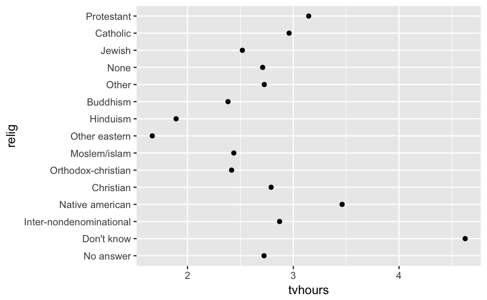
ggplot(gss_cat, aes(race)) +
geom_bar() +
scale_x_discrete(drop = FALSE)
Use drop = FALSE to not drop valid values.
10.3.1 Exercise
- Explore the distribution of
rincome(reported income). What makes the default bar chart hard to understand? How could you improve the plot?
rincome_plot <-
gss_cat %>%
ggplot(aes(rincome)) +
geom_bar()
rincome_plot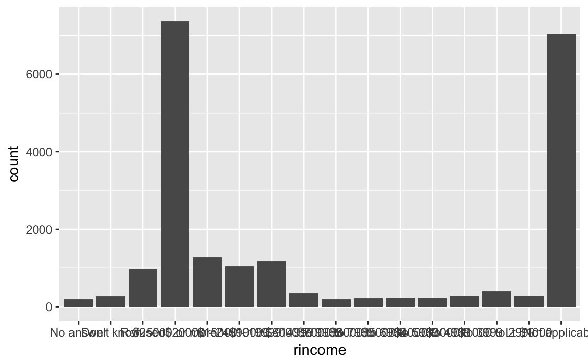
The default bar chart labels are too squished to read. One solution is to change the angle of the labels,
rincome_plot +
theme(axis.text.x = element_text(angle = 90))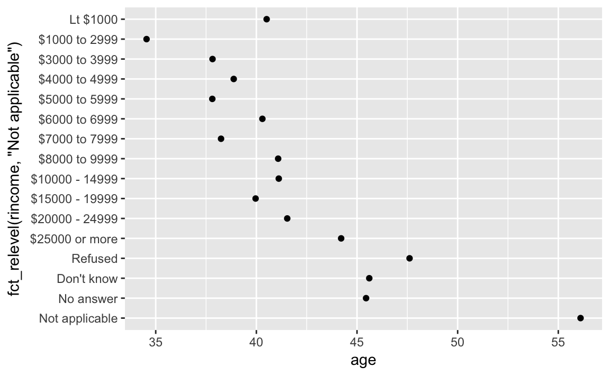
But that’s not natural either, because text is vertical, and we read horizontally. So with long labels, it is better to flip it.
rincome_plot +
coord_flip()
This is better, but it unituively goes from low to high. It would help if the scale is reversed. Also, if all the missing factors were differentiated.
- What is the most common
religin this survey? What’s the most commonpartyid?
The most common relig is “Protestant”
gss_cat %>%
count(relig) %>%
arrange(-n) %>%
head(1)
#> # A tibble: 1 × 2
#> relig n
#> <fctr> <int>
#> 1 Protestant 10846The most common partyid is “Independent”
gss_cat %>%
count(partyid) %>%
arrange(-n) %>%
head(1)
#> # A tibble: 1 × 2
#> partyid n
#> <fctr> <int>
#> 1 Independent 4119- Which
religdoesdenom(denomination) apply to? How can you find out with a table? How can you find out with a visualisation?
levels(gss_cat$denom)
#> [1] "No answer" "Don't know" "No denomination"
#> [4] "Other" "Episcopal" "Presbyterian-dk wh"
#> [7] "Presbyterian, merged" "Other presbyterian" "United pres ch in us"
#> [10] "Presbyterian c in us" "Lutheran-dk which" "Evangelical luth"
#> [13] "Other lutheran" "Wi evan luth synod" "Lutheran-mo synod"
#> [16] "Luth ch in america" "Am lutheran" "Methodist-dk which"
#> [19] "Other methodist" "United methodist" "Afr meth ep zion"
#> [22] "Afr meth episcopal" "Baptist-dk which" "Other baptists"
#> [25] "Southern baptist" "Nat bapt conv usa" "Nat bapt conv of am"
#> [28] "Am bapt ch in usa" "Am baptist asso" "Not applicable"From the context it is clear that denom refers to “Protestant” (and unsurprising given that it is the largest category in freq). Let’s filter out the non-responses, no answers, others, not-applicable, or no denomination, to leave only answers to denominations. After doing that, the only remaining responses are “Protestant”.
gss_cat %>%
filter(!denom %in% c("No answer", "Other", "Don't know", "Not applicable",
"No denomination")) %>%
count(relig)
#> # A tibble: 1 × 2
#> relig n
#> <fctr> <int>
#> 1 Protestant 7025This is also clear in a scatter plot of relig vs. denom where the points are proportional to the size of the number of answers (since otherwise there would be overplotting).
gss_cat %>%
count(relig, denom) %>%
ggplot(aes(x = relig, y = denom, size = n)) +
geom_point() +
theme(axis.text.x = element_text(angle = 90))
10.4 Modifying factor order
relig <- gss_cat %>%
group_by(relig) %>%
summarise(
age = mean(age, na.rm = TRUE),
tvhours = mean(tvhours, na.rm = TRUE),
n = n()
)
ggplot(relig, aes(tvhours, relig)) + geom_point()
ggplot(relig, aes(tvhours, fct_reorder(relig, tvhours))) +
geom_point()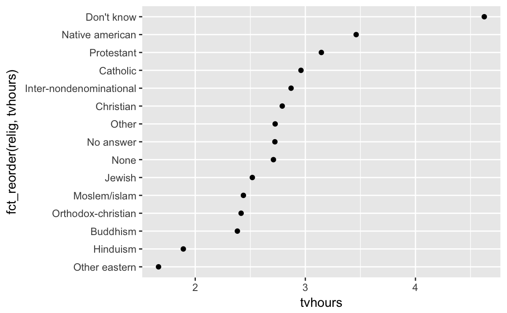
Move most data analysis out of the ggplot function call
rincome <- gss_cat %>%
group_by(rincome) %>%
summarise(
age = mean(age, na.rm = TRUE),
tvhours = mean(tvhours, na.rm = TRUE),
n = n()
)
ggplot(rincome, aes(age, fct_reorder(rincome, age))) + geom_point()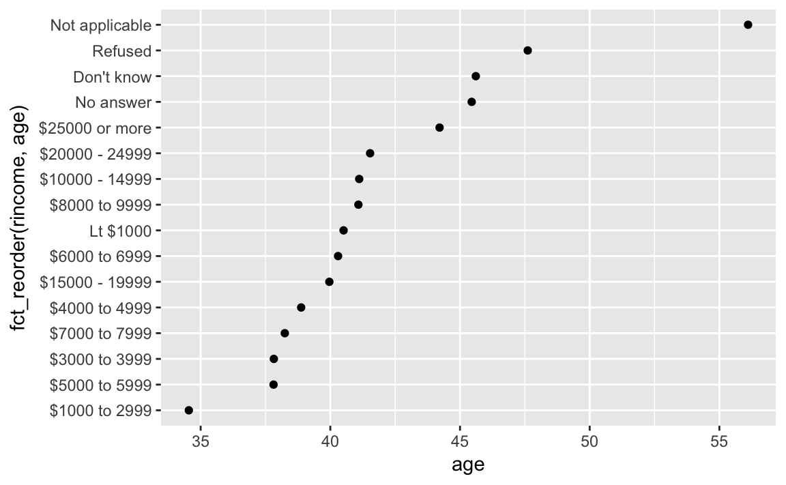
ggplot(rincome, aes(age, fct_relevel(rincome, "Not applicable"))) +
geom_point()
by_age <- gss_cat %>%
filter(!is.na(age)) %>%
group_by(age, marital) %>%
count() %>%
mutate(prop = n / sum(n))
ggplot(by_age, aes(age, prop, colour = marital)) +
geom_line(na.rm = TRUE)
ggplot(by_age, aes(age, prop, colour = fct_reorder2(marital, age, prop))) +
geom_line() +
labs(colour = "marital")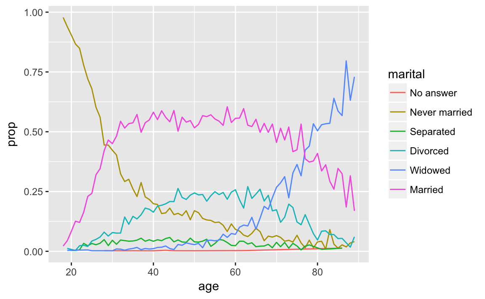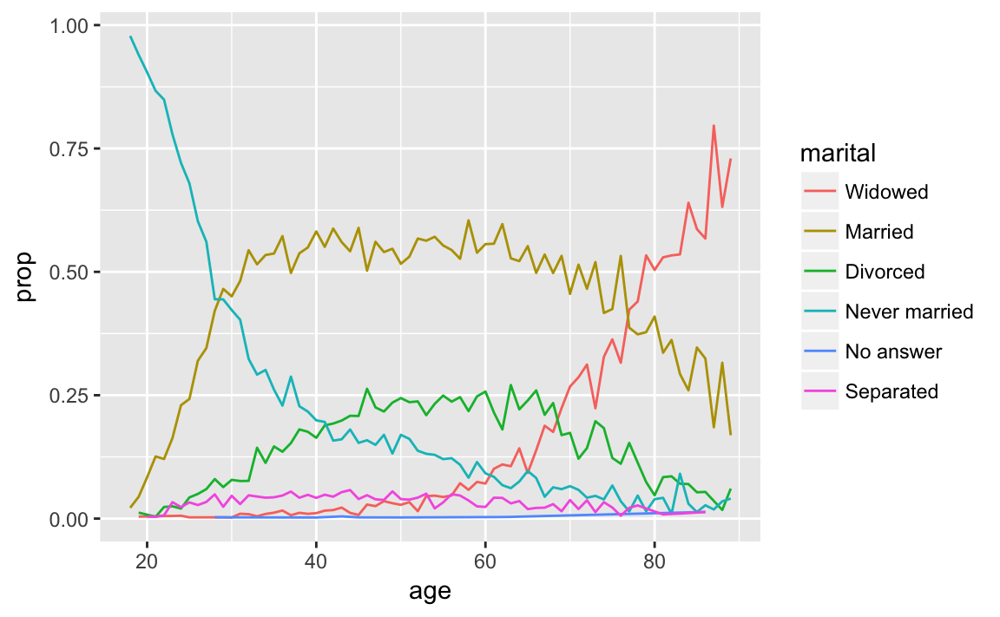
gss_cat %>%
mutate(marital = marital %>% fct_infreq() %>% fct_rev()) %>%
ggplot(aes(marital)) +
geom_bar()
10.4.1 Exercises
- There are some suspiciously high numbers in
tvhours. Is themeana good summary?
summary(gss_cat[["tvhours"]])
#> Min. 1st Qu. Median Mean 3rd Qu. Max. NA's
#> 0 1 2 3 4 24 10146gss_cat %>%
filter(!is.na(tvhours)) %>%
ggplot(aes(x = tvhours)) +
geom_histogram(binwidth = 1)
Whether the mean is the best summary epends on what you are using it for :-), i.e. your objective. But probably the median would be what most people prefer. And the hours of tv doesn’t look that surprising to me.
- For each factor in gss_cat identify whether the order of the levels is arbitrary or principled.
The following piece of code uses functions covered in Ch 21, to print out the names of only the factors.
keep(gss_cat, is.factor) %>% names()
#> [1] "marital" "race" "rincome" "partyid" "relig" "denom"There are five six categorical variables: marital, race, rincome, partyid, relig, denom.
The ordering of marital is “somewhat principled”. There is some sort of logic in that the levels are grouped “never married”, married at some point (separated, divorced, widowed), and “married”; though it would seem that “Never Married”, “Divorced”, “Widowed”, “Separated”, “Married” might be more natural. I find that the question of ordering can be determined by the level of aggregation in a categorical variable, and there can be more “partially ordered” factors than one would expect.
levels(gss_cat[["marital"]])
#> [1] "No answer" "Never married" "Separated" "Divorced"
#> [5] "Widowed" "Married"gss_cat %>%
ggplot(aes(x = marital)) +
geom_bar()
The ordering of race is principled in that the categories are ordered by count of observations in the data.
levels(gss_cat$race)
#> [1] "Other" "Black" "White" "Not applicable"gss_cat %>%
ggplot(aes(race)) +
geom_bar(drop = FALSE)
#> Warning: Ignoring unknown parameters: drop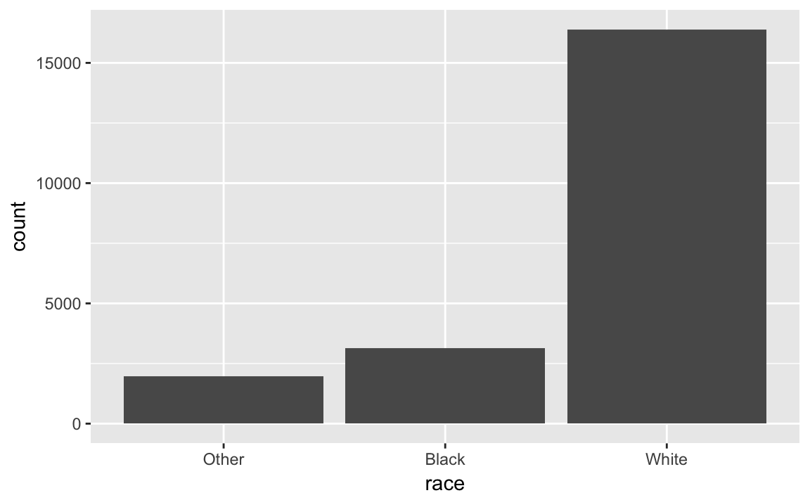
The levels of rincome are ordered in decreasing order of the income; however the placement of “No answer”, “Don’t know”, and “Refused” before, and “Not applicable” after the income levels is arbitrary. It would be better to place all the missing income level categories either before or after all the known values.
levels(gss_cat$rincome)
#> [1] "No answer" "Don't know" "Refused" "$25000 or more"
#> [5] "$20000 - 24999" "$15000 - 19999" "$10000 - 14999" "$8000 to 9999"
#> [9] "$7000 to 7999" "$6000 to 6999" "$5000 to 5999" "$4000 to 4999"
#> [13] "$3000 to 3999" "$1000 to 2999" "Lt $1000" "Not applicable"The levels of relig is arbitrary: there is no natural ordering, and they don’t appear to be ordered by stats within the dataset.
levels(gss_cat$relig)
#> [1] "No answer" "Don't know"
#> [3] "Inter-nondenominational" "Native american"
#> [5] "Christian" "Orthodox-christian"
#> [7] "Moslem/islam" "Other eastern"
#> [9] "Hinduism" "Buddhism"
#> [11] "Other" "None"
#> [13] "Jewish" "Catholic"
#> [15] "Protestant" "Not applicable"gss_cat %>%
ggplot(aes(relig)) +
geom_bar() +
coord_flip()
The same goes for denom.
levels(gss_cat$denom)
#> [1] "No answer" "Don't know" "No denomination"
#> [4] "Other" "Episcopal" "Presbyterian-dk wh"
#> [7] "Presbyterian, merged" "Other presbyterian" "United pres ch in us"
#> [10] "Presbyterian c in us" "Lutheran-dk which" "Evangelical luth"
#> [13] "Other lutheran" "Wi evan luth synod" "Lutheran-mo synod"
#> [16] "Luth ch in america" "Am lutheran" "Methodist-dk which"
#> [19] "Other methodist" "United methodist" "Afr meth ep zion"
#> [22] "Afr meth episcopal" "Baptist-dk which" "Other baptists"
#> [25] "Southern baptist" "Nat bapt conv usa" "Nat bapt conv of am"
#> [28] "Am bapt ch in usa" "Am baptist asso" "Not applicable"Ignoring “No answer”, “Don’t know”, and “Other party”, the levels of partyid are ordered from “Strong Republican”" to “Strong Democrat”.
levels(gss_cat$partyid)
#> [1] "No answer" "Don't know" "Other party"
#> [4] "Strong republican" "Not str republican" "Ind,near rep"
#> [7] "Independent" "Ind,near dem" "Not str democrat"
#> [10] "Strong democrat"- Why did moving “Not applicable” to the front of the levels move it to the bottom of the plot?
Because that gives the level “Not applicable” an integer value of 1.
10.5 Modifying factor levels
gss_cat %>% count(partyid)
#> # A tibble: 10 × 2
#> partyid n
#> <fctr> <int>
#> 1 No answer 154
#> 2 Don't know 1
#> 3 Other party 393
#> 4 Strong republican 2314
#> 5 Not str republican 3032
#> 6 Ind,near rep 1791
#> # ... with 4 more rowsgss_cat %>%
mutate(partyid = fct_recode(partyid,
"Republican, strong" = "Strong republican",
"Republican, weak" = "Not str republican",
"Independent, near rep" = "Ind,near rep",
"Independent, near dem" = "Ind,near dem",
"Democrat, weak" = "Not str democrat",
"Democrat, strong" = "Strong democrat"
)) %>%
count(partyid)
#> # A tibble: 10 × 2
#> partyid n
#> <fctr> <int>
#> 1 No answer 154
#> 2 Don't know 1
#> 3 Other party 393
#> 4 Republican, strong 2314
#> 5 Republican, weak 3032
#> 6 Independent, near rep 1791
#> # ... with 4 more rowsgss_cat %>%
mutate(partyid = fct_recode(partyid,
"Republican, strong" = "Strong republican",
"Republican, weak" = "Not str republican",
"Independent, near rep" = "Ind,near rep",
"Independent, near dem" = "Ind,near dem",
"Democrat, weak" = "Not str democrat",
"Democrat, strong" = "Strong democrat",
"Other" = "No answer",
"Other" = "Don't know",
"Other" = "Other party"
)) %>%
count(partyid)
#> # A tibble: 8 × 2
#> partyid n
#> <fctr> <int>
#> 1 Other 548
#> 2 Republican, strong 2314
#> 3 Republican, weak 3032
#> 4 Independent, near rep 1791
#> 5 Independent 4119
#> 6 Independent, near dem 2499
#> # ... with 2 more rowsgss_cat %>%
mutate(relig = fct_lump(relig)) %>%
count(relig)
#> # A tibble: 2 × 2
#> relig n
#> <fctr> <int>
#> 1 Protestant 10846
#> 2 Other 10637gss_cat %>%
mutate(relig = fct_lump(relig, n = 10)) %>%
count(relig, sort = TRUE) %>%
print(n = Inf)
#> # A tibble: 10 × 2
#> relig n
#> <fctr> <int>
#> 1 Protestant 10846
#> 2 Catholic 5124
#> 3 None 3523
#> 4 Christian 689
#> 5 Other 458
#> 6 Jewish 388
#> 7 Buddhism 147
#> 8 Inter-nondenominational 109
#> 9 Moslem/islam 104
#> 10 Orthodox-christian 9510.5.1 Exercises
- How have the proportions of people identifying as Democrat, Republican, and Independent changed over time?
To answer that, we need to combine the multiple levels into Democrat, Republican, and Independent
levels(gss_cat$partyid)
#> [1] "No answer" "Don't know" "Other party"
#> [4] "Strong republican" "Not str republican" "Ind,near rep"
#> [7] "Independent" "Ind,near dem" "Not str democrat"
#> [10] "Strong democrat"gss_cat %>%
mutate(partyid =
fct_collapse(partyid,
other = c("No answer", "Don't know", "Other party"),
rep = c("Strong republican", "Not str republican"),
ind = c("Ind,near rep", "Independent", "Ind,near dem"),
dem = c("Not str democrat", "Strong democrat"))) %>%
count(year, partyid) %>%
group_by(year) %>%
mutate(p = n / sum(n)) %>%
ggplot(aes(x = year, y = p,
colour = fct_reorder2(partyid, year, p))) +
geom_point() +
geom_line() +
labs(colour = "Party ID.")

- How could you collapse rincome into a small set of categories?
Group all the non-responses into one category, and then group other categories into a smaller number. Since there is a clear ordering, we wouldn’t want to use something like fct_lump.
levels(gss_cat$rincome)
#> [1] "No answer" "Don't know" "Refused" "$25000 or more"
#> [5] "$20000 - 24999" "$15000 - 19999" "$10000 - 14999" "$8000 to 9999"
#> [9] "$7000 to 7999" "$6000 to 6999" "$5000 to 5999" "$4000 to 4999"
#> [13] "$3000 to 3999" "$1000 to 2999" "Lt $1000" "Not applicable"library("stringr")
gss_cat %>%
mutate(rincome =
fct_collapse(
rincome,
`Unknown` = c("No answer", "Don't know", "Refused", "Not applicable"),
`Lt $5000` = c("Lt $1000", str_c("$", c("1000", "3000", "4000"),
" to ", c("2999", "3999", "4999"))),
`$5000 to 10000` = str_c("$", c("5000", "6000", "7000", "8000"),
" to ", c("5999", "6999", "7999", "9999"))
)) %>%
ggplot(aes(x = rincome)) +
geom_bar() +
coord_flip()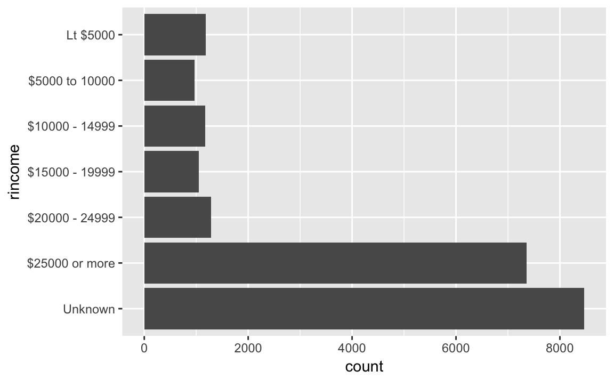
Notes
lubridate
today,nowymdetc.,ymd_hmsetc.make_datetime,make_dateas_datetime,as_dateyear,month,mday,yday,wdayandyear<-floor_date,round_date,ceiling_dateupdateas.duration, duration functions (ddays, etc)- period functions (
days,months, etc) - interval creation with
%--% with_tz,force_tz- hms package has times
- Ideas for applications: CDB90 data, COW war start end and duration
- Read more on time-zones: https://en.wikipedia.org/wiki/Time_zone
- Computerphile The Problem with Time & Timezones - Computerphile
- The history of the tz database are themselves interesting: https://en.wikipedia.org/wiki/Tz_database
I think time-zones are likely a point for social science research in and of themselves. Policy choices. Coordination. Regression discontinuity designs. Just sayin…
10.6 Prerequisite
library(tidyverse)
library(lubridate)
library(nycflights13)10.7 Creating date/times
today and now are both lubridate functions
today()
#> [1] "2017-01-08"
now()
#> [1] "2017-01-08 13:29:10 PST"From strings
ymd("2017-01-31")
#> [1] "2017-01-31"
mdy("January 31st, 2017")
#> [1] "2017-01-31"
dmy("31-Jan-2017")
#> [1] "2017-01-31"They allow for unquoted numbers
ymd(20170131)
#> [1] "2017-01-31"ymd_hms("2017-01-31 20:11:59")
#> [1] "2017-01-31 20:11:59 UTC"
mdy_hm("01/31/2017 08:01")
#> [1] "2017-01-31 08:01:00 UTC"
ymd(20170131, tz = "UTC")
#> [1] "2017-01-31 UTC"From individual components
flights %>%
select(year, month, day, hour, minute) %>%
mutate(departure = make_datetime(year, month, day, hour, minute))
#> # A tibble: 336,776 × 6
#> year month day hour minute departure
#> <int> <int> <int> <dbl> <dbl> <dttm>
#> 1 2013 1 1 5 15 2013-01-01 05:15:00
#> 2 2013 1 1 5 29 2013-01-01 05:29:00
#> 3 2013 1 1 5 40 2013-01-01 05:40:00
#> 4 2013 1 1 5 45 2013-01-01 05:45:00
#> 5 2013 1 1 6 0 2013-01-01 06:00:00
#> 6 2013 1 1 5 58 2013-01-01 05:58:00
#> # ... with 3.368e+05 more rowsflights %>% select(dep_time) %>% head()
#> # A tibble: 6 × 1
#> dep_time
#> <int>
#> 1 517
#> 2 533
#> 3 542
#> 4 544
#> 5 554
#> 6 554NOTE %/% is integer division, divide and throw away the remainder. %% calculates the modulus (remainder of division). For example to test for an even number: x %% 2 == 0, or odd x %% 2 == 1. To get the thousands value of a number x %/% 1000.
make_datetime_100 <- function(year, month, day, time) {
make_datetime(year, month, day, time %/% 100, time %% 100)
}
flights_dt <- flights %>%
filter(!is.na(dep_time), !is.na(arr_time)) %>%
mutate(
dep_time = make_datetime_100(year, month, day, dep_time),
arr_time = make_datetime_100(year, month, day, arr_time),
sched_dep_time = make_datetime_100(year, month, day, sched_dep_time),
sched_arr_time = make_datetime_100(year, month, day, sched_arr_time)
) %>%
select(origin, dest, ends_with("delay"), ends_with("time"))
flights_dt %>% head
#> # A tibble: 6 × 9
#> origin dest dep_delay arr_delay dep_time sched_dep_time
#> <chr> <chr> <dbl> <dbl> <dttm> <dttm>
#> 1 EWR IAH 2 11 2013-01-01 05:17:00 2013-01-01 05:15:00
#> 2 LGA IAH 4 20 2013-01-01 05:33:00 2013-01-01 05:29:00
#> 3 JFK MIA 2 33 2013-01-01 05:42:00 2013-01-01 05:40:00
#> 4 JFK BQN -1 -18 2013-01-01 05:44:00 2013-01-01 05:45:00
#> 5 LGA ATL -6 -25 2013-01-01 05:54:00 2013-01-01 06:00:00
#> 6 EWR ORD -4 12 2013-01-01 05:54:00 2013-01-01 05:58:00
#> # ... with 3 more variables: arr_time <dttm>, sched_arr_time <dttm>,
#> # air_time <dbl>flights_dt %>%
ggplot(aes(dep_time)) +
geom_freqpoly(binwidth = 86400) # 86400 seconds = 1 day
flights_dt %>%
filter(dep_time < ymd(20130102)) %>%
ggplot(aes(dep_time)) +
geom_freqpoly(binwidth = 600) # 600 s = 10 minutes
as_datetime(today())
#> [1] "2017-01-08 UTC"
as_date(now())
#> [1] "2017-01-08"Note Say something about Unix epochs.
Calculate dates and datetimes from number of seconds (as_datetime) or days (as_date) from Unix epoch.
as_datetime(60 * 60 * 10)
#> [1] "1970-01-01 10:00:00 UTC"as_date(365 * 10 + 2)
#> [1] "1980-01-01"10.7.1 Exercises
- What happens if you parse a string that contains invalid dates?
ret <- ymd(c("2010-10-10", "bananas"))
#> Warning: 1 failed to parse.
print(class(ret))
#> [1] "Date"
ret
#> [1] "2010-10-10" NAIt produces an NA and an warning message.
- What does the tzone argument to
today()do? Why is it important?
It determines the time-zone of the date. Since different time-zones can have different dates, the value of today() can vary depending on the time-zone specified.
- Use the appropriate lubridate function to parse each of the following dates:
d1 <- "January 1, 2010"
mdy(d1)
#> [1] "2010-01-01"
d2 <- "2015-Mar-07"
ymd(d2)
#> [1] "2015-03-07"
d3 <- "06-Jun-2017"
dmy(d3)
#> [1] "2017-06-06"
d4 <- c("August 19 (2015)", "July 1 (2015)")
mdy(d4)
#> [1] "2015-08-19" "2015-07-01"
d5 <- "12/30/14" # Dec 30, 2014
mdy(d5)
#> [1] "2014-12-30"10.8 Date-Time Components
datetime <- ymd_hms("2016-07-08 12:34:56")
year(datetime)
#> [1] 2016
month(datetime)
#> [1] 7
mday(datetime)
#> [1] 8
yday(datetime)
#> [1] 190
wday(datetime)
#> [1] 6month(datetime, label = TRUE)
#> [1] Jul
#> 12 Levels: Jan < Feb < Mar < Apr < May < Jun < Jul < Aug < Sep < ... < Dec
wday(datetime, label = TRUE, abbr = FALSE)
#> [1] Friday
#> 7 Levels: Sunday < Monday < Tuesday < Wednesday < Thursday < ... < Saturdayflights_dt %>%
mutate(wday = wday(dep_time, label = TRUE)) %>%
ggplot(aes(x = wday)) + geom_bar()
flights_dt %>%
mutate(minute = minute(dep_time)) %>%
group_by(minute) %>%
summarise(
avg_delay = mean(arr_delay, na.rm = TRUE),
n = n()) %>%
ggplot(aes(minute, avg_delay)) +
geom_line()
sched_dep <- flights_dt %>%
mutate(minute = minute(sched_dep_time)) %>%
group_by(minute) %>%
summarise(
avg_delay = mean(arr_delay, na.rm = TRUE),
n = n())
ggplot(sched_dep, aes(minute, avg_delay)) +
geom_line()
ggplot(sched_dep, aes(minute, n)) +
geom_line()
flights_dt %>%
count(week = floor_date(dep_time, "week")) %>%
ggplot(aes(week, n)) +
geom_line()
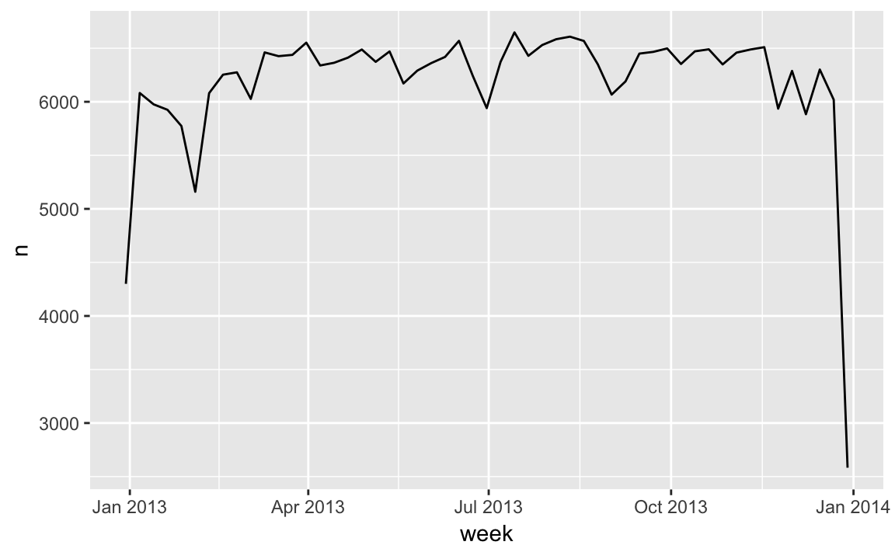
Note difference between rounded and unrounded date can give the within period time.
(datetime <- ymd_hms("2016-07-08 12:34:56"))
#> [1] "2016-07-08 12:34:56 UTC"
year(datetime) <- 2020
datetime
#> [1] "2020-07-08 12:34:56 UTC"
month(datetime) <- 01
datetime
#> [1] "2020-01-08 12:34:56 UTC"
hour(datetime) <- hour(datetime) + 1
datetime
#> [1] "2020-01-08 13:34:56 UTC"update(datetime, year = 2020, month = 2, mday = 2, hour = 2)
#> [1] "2020-02-02 02:34:56 UTC"roll-over for large values
ymd("2015-02-01") %>% update(mday = 30)
#> [1] "2015-03-02"ymd("2015-02-01") %>%
update(hour = 400)
#> [1] "2015-02-17 16:00:00 UTC"flights_dt %>%
mutate(dep_hour = update(dep_time, yday = 1)) %>%
ggplot(aes(dep_hour)) +
geom_freqpoly(binwidth = 300)
10.8.1 Exercises
- How does the distribution of flight times within a day change over the course of the year?
Let’s try plotting this by month?
flights_dt %>%
mutate(time = hour(dep_time) * 100 + minute(dep_time),
mon = as.factor(month
(dep_time))) %>%
ggplot(aes(x = time, group = mon, color = mon)) +
geom_freqpoly(binwidth = 100)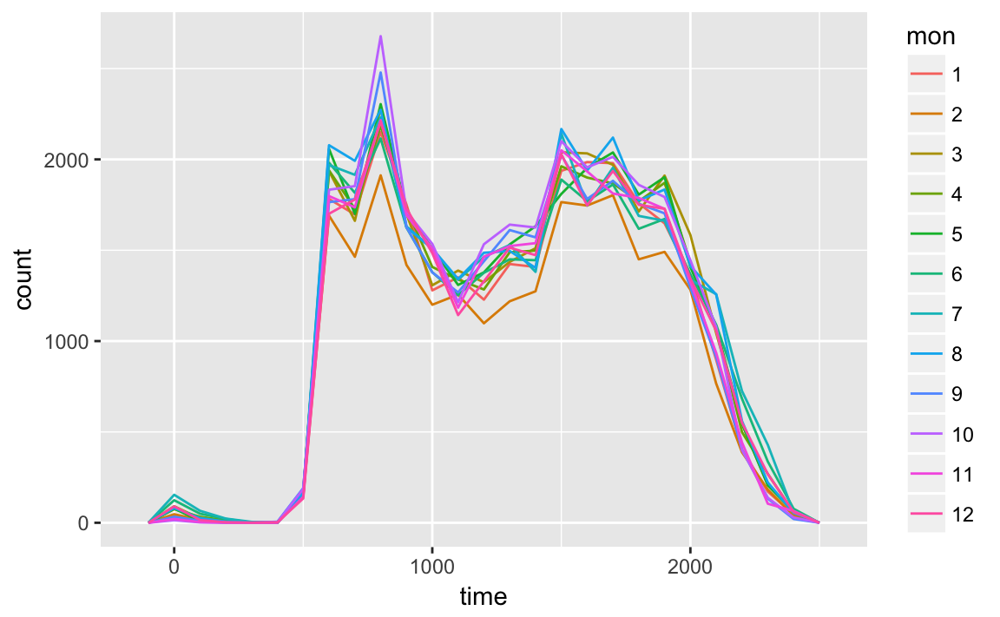
This will look better if everything is normalized within groups. The reason that February is lower is that there are fewer days and thus fewer flights.
flights_dt %>%
mutate(time = hour(dep_time) * 100 + minute(dep_time),
mon = as.factor(month
(dep_time))) %>%
ggplot(aes(x = time, y = ..density.., group = mon, color = mon)) +
geom_freqpoly(binwidth = 100)
At least to me there doesn’t appear to much difference in within-day distribution over the year, but I maybe thinking about it incorrectly.
- Compare
dep_time,sched_dep_timeanddep_delay. Are they consistent? Explain your findings.
If they are consistent, then dep_time = sched_dep_time + dep_delay.
flights_dt %>%
mutate(dep_time_ = sched_dep_time + dep_delay * 60) %>%
filter(dep_time_ != dep_time) %>%
select(dep_time_, dep_time, sched_dep_time, dep_delay)
#> # A tibble: 1,205 × 4
#> dep_time_ dep_time sched_dep_time dep_delay
#> <dttm> <dttm> <dttm> <dbl>
#> 1 2013-01-02 08:48:00 2013-01-01 08:48:00 2013-01-01 18:35:00 853
#> 2 2013-01-03 00:42:00 2013-01-02 00:42:00 2013-01-02 23:59:00 43
#> 3 2013-01-03 01:26:00 2013-01-02 01:26:00 2013-01-02 22:50:00 156
#> 4 2013-01-04 00:32:00 2013-01-03 00:32:00 2013-01-03 23:59:00 33
#> 5 2013-01-04 00:50:00 2013-01-03 00:50:00 2013-01-03 21:45:00 185
#> 6 2013-01-04 02:35:00 2013-01-03 02:35:00 2013-01-03 23:59:00 156
#> # ... with 1,199 more rowsThere exist discrepencies. It looks like there are mistakes in the dates. These are flights in which the actual departure time is on the next day relative to the scheduled departure time. We forgot to account for this when creating the date-times. The code would have had to check if the departure time is less than the scheduled departure time. Alternatively, simply adding the delay time is more robust because it will automatically account for crossing into the next day.
- Compare
air_timewith the duration between the departure and arrival. Explain your findings.
flights_dt %>%
mutate(flight_duration = as.numeric(arr_time - dep_time),
air_time_mins = air_time,
diff = flight_duration - air_time_mins) %>%
select(origin, dest, flight_duration, air_time_mins, diff)
#> # A tibble: 328,063 × 5
#> origin dest flight_duration air_time_mins diff
#> <chr> <chr> <dbl> <dbl> <dbl>
#> 1 EWR IAH 193 227 -34
#> 2 LGA IAH 197 227 -30
#> 3 JFK MIA 221 160 61
#> 4 JFK BQN 260 183 77
#> 5 LGA ATL 138 116 22
#> 6 EWR ORD 106 150 -44
#> # ... with 3.281e+05 more rows- How does the average delay time change over the course of a day? Should you use
dep_timeorsched_dep_time? Why?
Use sched_dep_time because that is the relevant metric for someone scheduling a flight. Also, using dep_time will always bias delays to later in the day since delays will push flights later.
flights_dt %>%
mutate(sched_dep_hour = hour(sched_dep_time)) %>%
group_by(sched_dep_hour) %>%
summarise(dep_delay = mean(dep_delay)) %>%
ggplot(aes(y = dep_delay, x = sched_dep_hour)) +
geom_point() +
geom_smooth()
#> `geom_smooth()` using method = 'loess'
- On what day of the week should you leave if you want to minimise the chance of a delay?
Sunday has the lowest average departure delay time and the lowest average arrival delay time.
flights_dt %>%
mutate(dow = wday(sched_dep_time)) %>%
group_by(dow) %>%
summarise(dep_delay = mean(dep_delay),
arr_delay = mean(arr_delay, na.rm = TRUE))
#> # A tibble: 7 × 3
#> dow dep_delay arr_delay
#> <dbl> <dbl> <dbl>
#> 1 1 11.5 4.82
#> 2 2 14.7 9.65
#> 3 3 10.6 5.39
#> 4 4 11.7 7.05
#> 5 5 16.1 11.74
#> 6 6 14.7 9.07
#> # ... with 1 more rows- What makes the distribution of
diamonds$caratandflights$sched_dep_timesimilar?
ggplot(diamonds, aes(x = carat)) +
geom_density()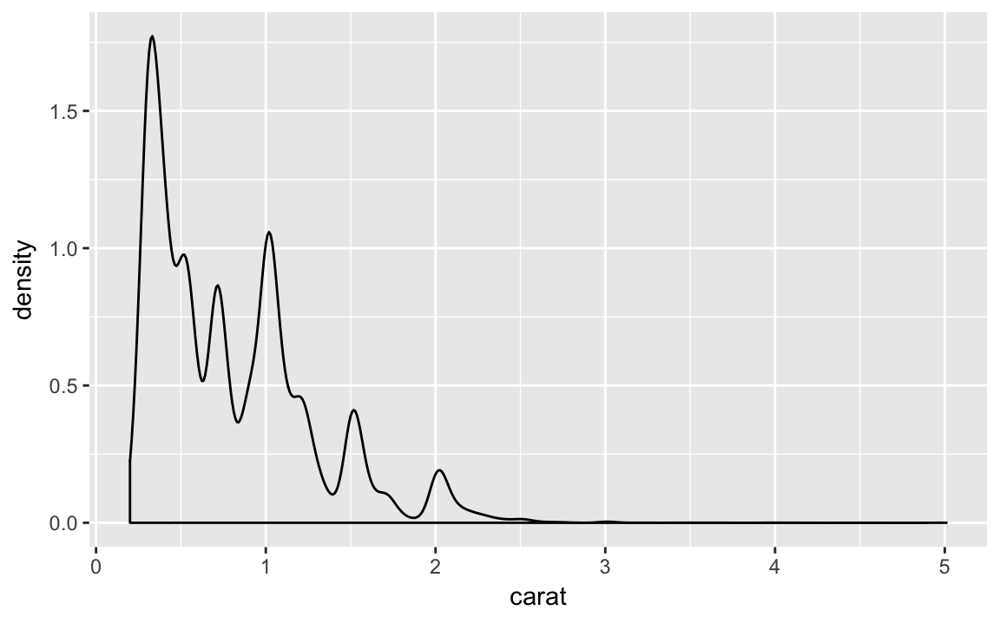
In both carat and sched_dep_time there are abnormally large numbers of values are at nice “human” numbers. In sched_dep_time it is at 00 and 30 minutes. In carats, it is at 0, 1/3, 1/2, 2/3,
ggplot(diamonds, aes(x = carat %% 1 * 100)) +
geom_histogram(binwidth = 1)
In scheduled departure times it is 00 and 30 minutes, and minutes ending in 0 and 5.
ggplot(flights_dt, aes(x = minute(sched_dep_time))) +
geom_histogram(binwidth = 1)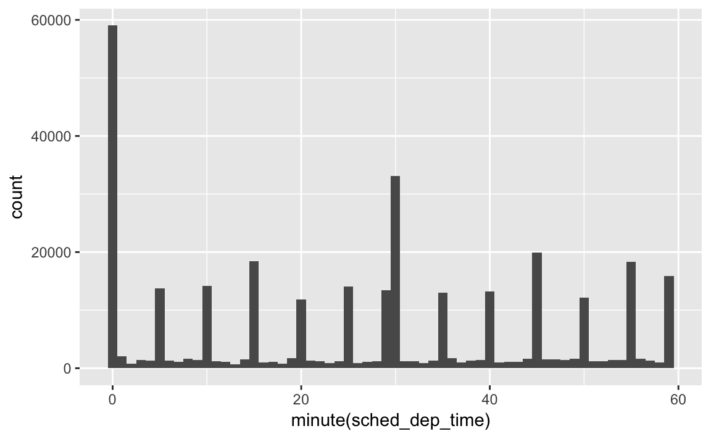
- Confirm my hypothesis that the early departures of flights in minutes 20-30 and 50-60 are caused by scheduled flights that leave early. Hint: create a binary variable that tells you whether or not a flight was delayed.
At the minute level, there doesn’t appear to be anything:
flights_dt %>%
mutate(early = dep_delay < 0,
minute = minute(sched_dep_time)) %>%
group_by(minute) %>%
summarise(early = mean(early)) %>%
ggplot(aes(x = minute, y = early)) +
geom_point()
But if grouped in 10 minute intervals, there is a higher proportion of early flights during those minutes.
flights_dt %>%
mutate(early = dep_delay < 0,
minute = minute(sched_dep_time) %% 10) %>%
group_by(minute) %>%
summarise(early = mean(early)) %>%
ggplot(aes(x = minute, y = early)) +
geom_point()
10.9 Time Spans
- duration: exact number of seconds
- period: human time periods - e.g. weeks, months
- interval: start and end points
10.9.1 Durations
h_age <- today() - ymd(19791014)
class(h_age)
#> [1] "difftime"
h_age
#> Time difference of 13601 daysas.duration(h_age)
#> [1] "1175126400s (~37.24 years)"dseconds(15)
#> [1] "15s"
dminutes(10)
#> [1] "600s (~10 minutes)"
dhours(c(12, 24))
#> [1] "43200s (~12 hours)" "86400s (~1 days)"
ddays(0:5)
#> [1] "0s" "86400s (~1 days)" "172800s (~2 days)"
#> [4] "259200s (~3 days)" "345600s (~4 days)" "432000s (~5 days)"
dweeks(3)
#> [1] "1814400s (~3 weeks)"
dyears(1)
#> [1] "31536000s (~52.14 weeks)"durations are always in seconds, and larger units are in the standard multiples of seconds.
Arithmetic with durations
2 * dyears(1)
#> [1] "63072000s (~2 years)"
dyears(1) + dweeks(12) + dhours(15)
#> [1] "38847600s (~1.23 years)"tomorrow <- today() + ddays(1)
last_year <- today() - dyears(1)Surprising results because doesn’t account for weirdness like timezones
one_pm <- ymd_hms("2016-03-12 13:00:00", tz = "America/New_York")
one_pm
#> [1] "2016-03-12 13:00:00 EST"
one_pm + ddays(1)
#> [1] "2016-03-13 14:00:00 EDT"10.9.2 Periods
Periods are durations for the irregular messy human time periods: months, days.
one_pm
#> [1] "2016-03-12 13:00:00 EST"
one_pm + days(1)
#> [1] "2016-03-13 13:00:00 EDT"seconds(15)
#> [1] "15S"
minutes(10)
#> [1] "10M 0S"
hours(c(12, 14))
#> [1] "12H 0M 0S" "14H 0M 0S"
days(7)
#> [1] "7d 0H 0M 0S"
months(1:6)
#> [1] "1m 0d 0H 0M 0S" "2m 0d 0H 0M 0S" "3m 0d 0H 0M 0S" "4m 0d 0H 0M 0S"
#> [5] "5m 0d 0H 0M 0S" "6m 0d 0H 0M 0S"
weeks(3)
#> [1] "21d 0H 0M 0S"
years(1)
#> [1] "1y 0m 0d 0H 0M 0S"Add or multiply periods:
10 * (months(6) + days(1))
#> [1] "60m 10d 0H 0M 0S"
days(50) + hours(25) + minutes(2)
#> [1] "50d 25H 2M 0S"# leap year
ymd("2016-01-01") + dyears(1)
#> [1] "2016-12-31"
ymd("2016-01-01") + years(1)
#> [1] "2017-01-01"
# DST
one_pm + ddays(1)
#> [1] "2016-03-13 14:00:00 EDT"
one_pm + days(1)
#> [1] "2016-03-13 13:00:00 EDT"Define overnight when arr_time < dep_time (no flights > 24 hours):
flights_dt <- flights_dt %>%
mutate(
overnight = arr_time < dep_time,
arr_time = arr_time + days(overnight * 1),
sched_arr_time = sched_arr_time + days(overnight * 1)
)flights_dt %>%
filter(overnight, arr_time < dep_time)
#> # A tibble: 0 × 10
#> # ... with 10 variables: origin <chr>, dest <chr>, dep_delay <dbl>,
#> # arr_delay <dbl>, dep_time <dttm>, sched_dep_time <dttm>,
#> # arr_time <dttm>, sched_arr_time <dttm>, air_time <dbl>,
#> # overnight <lgl>10.9.3 Intervals
NOTE This section seems less complete than the others.
Interval = duration with starting point.
years(1) / days(1)
#> estimate only: convert to intervals for accuracy
#> [1] 365next_year <- today() + years(1)
(today() %--% next_year) / ddays(1)
#> [1] 365For number of periods in an intervla, use integer division.
(today() %--% next_year) %/% days(1)
#> Note: method with signature 'Timespan#Timespan' chosen for function '%/%',
#> target signature 'Interval#Period'.
#> "Interval#ANY", "ANY#Period" would also be valid
#> [1] 36510.9.4 Exercises
- Why is there
months()but nodmonths()?
There is no direct unambigous value of months in seconds:
- 31 days: Jan, Mar, May, Jul, Aug, Oct,
- 30 days: Apr, Jun, Sep, Nov, Dec
- 28 or 29 days: Feb
Though in the past, in the pre-computer era, for arithmetic convenience, bankers adopoted a 360 day year with 30 day months.
- Explain
days(overnight * 1)to someone who has just started learning R. How does it work?
overnight is equal to TRUE (1) or FALSE (0). So if it is an overnight flight, this becomes 1 day, and if not, then overnight = 0, and no days are added to the date.
- Create a vector of dates giving the first day of every month in 2015. Create a vector of dates giving the first day of every month in the current year.
A vector of the first day of the month for every month in 2015:
ymd("2015-01-01") + months(0:11)
#> [1] "2015-01-01" "2015-02-01" "2015-03-01" "2015-04-01" "2015-05-01"
#> [6] "2015-06-01" "2015-07-01" "2015-08-01" "2015-09-01" "2015-10-01"
#> [11] "2015-11-01" "2015-12-01"To get the vector of the first day of the month for this year, we first need to figure out what this year is, and get January 1st of it. I can do that by taking today() and truncating it to the year using floor_date:
floor_date(today(), unit = "year") + months(0:11)
#> [1] "2017-01-01" "2017-02-01" "2017-03-01" "2017-04-01" "2017-05-01"
#> [6] "2017-06-01" "2017-07-01" "2017-08-01" "2017-09-01" "2017-10-01"
#> [11] "2017-11-01" "2017-12-01"- Write a function that given your birthday (as a date), returns how old you are in years.
age <- function(bday) {
(bday %--% today()) %/% years(1)
}
age(ymd("1990-10-12"))
#> [1] 26- Why can’t
(today() %--% (today() + years(1)) / months(1)work?
It appears to work. Today is a date. Today + 1 year is a valid endpoint for an interval. And months is period that is defined in this period.
(today() %--% (today() + years(1))) %/% months(1)
#> [1] 12
(today() %--% (today() + years(1))) / months(1)
#> [1] 1210.9.5 Time Zones
Sys.timezone()
#> [1] "America/Los_Angeles"length(OlsonNames())
#> [1] 589
head(OlsonNames())
#> [1] "Africa/Abidjan" "Africa/Accra" "Africa/Addis_Ababa"
#> [4] "Africa/Algiers" "Africa/Asmara" "Africa/Asmera"In R, timezones only control printing.
(x1 <- ymd_hms("2015-06-01 12:00:00", tz = "America/New_York"))
#> [1] "2015-06-01 12:00:00 EDT"
(x2 <- ymd_hms("2015-06-01 18:00:00", tz = "Europe/Copenhagen"))
#> [1] "2015-06-01 18:00:00 CEST"
(x3 <- ymd_hms("2015-06-02 04:00:00", tz = "Pacific/Auckland"))
#> [1] "2015-06-02 04:00:00 NZST"x1 - x2
#> Time difference of 0 secs
x1 - x3
#> Time difference of 0 secsLubridate always uses UTC unless otherwise specified.
x4 <- c(x1, x2, x3)
x4
#> [1] "2015-06-01 09:00:00 PDT" "2015-06-01 09:00:00 PDT"
#> [3] "2015-06-01 09:00:00 PDT"To keep time-zone
x4a <- with_tz(x4, tzone = "Australia/Lord_Howe")
x4a
#> [1] "2015-06-02 02:30:00 LHST" "2015-06-02 02:30:00 LHST"
#> [3] "2015-06-02 02:30:00 LHST"
x4a - x4
#> Time differences in secs
#> [1] 0 0 0Change underlying instant
x4b <- force_tz(x4, tzone = "Australia/Lord_Howe")
x4b - x4
#> Time differences in hours
#> [1] -17.5 -17.5 -17.5Functions mentioned
typeofdplyr::nearis.finite,is.nan,is.naattributes
10.10 Prerequisites
library("tidyverse")
#> Loading tidyverse: ggplot2
#> Loading tidyverse: tibble
#> Loading tidyverse: tidyr
#> Loading tidyverse: readr
#> Loading tidyverse: purrr
#> Loading tidyverse: dplyr
#> Conflicts with tidy packages ----------------------------------------------
#> filter(): dplyr, stats
#> lag(): dplyr, stats10.11 Important types of Atomic Vector
10.11.1 Exercises
- Describe the difference between
is.finite(x)and!is.infinite(x).
To find out, try the functions on a numeric vector that includes a number and the five special values (NA, NaN, Inf, -Inf).
x <- c(0, NA, NaN, Inf, -Inf)
is.finite(x)
#> [1] TRUE FALSE FALSE FALSE FALSE
!is.infinite(x)
#> [1] TRUE TRUE TRUE FALSE FALSEis.finite considers only a number to be finite, and considers missing (NA), not a number (NaN), and positive and negative infinity to be not finite. However, since is.infinite only considers Inf and -Inf to be inifinite, !is.infinite considers 0 as well as missing and not-a-number to be not infinite.
So NA and NaN are neither finite or infinite. Mind blown.
- Read the source code for
dplyr::near()(Hint: to see the source code, drop the ()). How does it work?
The source for dplyr::near is:
dplyr::near
#> function (x, y, tol = .Machine$double.eps^0.5)
#> {
#> abs(x - y) < tol
#> }
#> <environment: namespace:dplyr>Instead of checking for exact equality, it checks that two numbers are within a certain tolerance, tol. By default the tolerance is set to the square root of .Machine$double.eps, which is the smallest floating point number that the computer can represent.
- A logical vector can take 3 possible values. How many possible values can an integer vector take? How many possible values can a double take? Use google to do some research.
The help for .Machine describes some of this:
As all current implementations of R use 32-bit integers and usne IEC 60559 floating-point (double precision) arithmetic,
The IEC 60559 or IEEE 754 format uses a 64 bit vector, but
- Brainstorm at least four functions that allow you to convert a double to an integer. How do they differ? Be precise.
Broadly, could convert a double to an integer by truncating or rounding to the nearest integer. For truncating or for handling ties (doubles ending in 0.5), there are multiple methods for determing which integer value to go to.
methods 0.5 -0.5 1.5 -1.5 ============================== ==== ===== ==== ==== towards zero: 0 0 1 1 away from zero 1 -1 2 -2 largest towards \(+\infty\)) 1 0 2 -1 smallest (towards \(-\infty\)) 0 -1 1 -2 even 0 0 2 -2 odd 1 -1 1 -1 =====================================================
See the Wikipedia article IEEE floating point for rounding rules.
For rounding, R and many programming languages use the IEEE standard. This is “round to nearest, ties to even”. This is not the same as what you See the value of looking at the value of .Machine$double.rounding and its documentation.
x <- seq(-10, 10, by = 0.5)
round2 <- function(x, to_even = TRUE) {
q <- x %/% 1
r <- x %% 1
q + (r >= 0.5)
}
x <- c(-12.5, -11.5, 11.5, 12.5)
round(x)
#> [1] -12 -12 12 12
round2(x, to_even = FALSE)
#> [1] -12 -11 12 13The problem with the always rounding 0.5 up rule is that it is biased upwards. Rounding to nearest with ties towards even is not. Consider the sequence \(-100.5, -99.5, \dots, 0, \dots, 99.5, 100.5\). Its sum is 0. It would be nice if rounding preserved that sum. Using the “ties towards even”, the sum is still zero. Hoever, the “ties towards \(+\infty\)” produces a non-zero number.
x <- seq(-100.5, 100.5, by = 1)
sum(x)
#> [1] 0
sum(round(x))
#> [1] 0
sum(round2(x))
#> [1] 101- What functions from the readr package allow you to turn a string into logical, integer, and double vector?
The functions parse_logical, parse_integer, and parse_number.
parse_logical(c("TRUE", "FALSE", "1", "0", "true", "t", "NA"))
#> [1] TRUE FALSE TRUE FALSE TRUE TRUE NAparse_integer(c("1235", "0134", "NA"))
#> [1] 1235 134 NAparse_number(c("1.0", "3.5", "1,000", "NA"))
#> [1] 1.0 3.5 1000.0 NARead the documentation of read_number. In order to ignore things like currency symbols and comma seperators in number strings it ignores them using a heuristic.
10.12 Using atomic vectors
- What does
mean(is.na(x))tell you about a vectorx? What aboutsum(!is.finite(x))?
The expression mean(is.na(x)) calculates the proportion of missing values in a vector
x <- c(1:10, NA, NaN, Inf, -Inf)
mean(is.na(x))
#> [1] 0.143The expression mean(!is.finite(x)) calcualtes the proportion of values that are NA, NaN, or infinite.
mean(!is.finite(x))
#> [1] 0.286- Carefully read the documentation of
is.vector(). What does it actually test for? Why doesis.atomic()not agree with the definition of atomic vectors above?
The function is.vector only checks whether the object has no attributes other than names. Thus a list is a vector:
is.vector(list(a = 1, b = 2))
#> [1] TRUEBut any object that has an attribute (other than names) is not:
x <- 1:10
attr(x, "something") <- TRUE
is.vector(x)
#> [1] FALSEThe idea behind this is that object oriented classes will include attributes, including, but not limited to "class".
The function is.atomic explicitly checks whether an object is one of the atomic types (“logical”, “integer”, “numeric”, “complex”, “character”, and “raw”) or NULL.
is.atomic(1:10)
#> [1] TRUE
is.atomic(list(a = 1))
#> [1] FALSEThe function is.atomic will consider objects to be atomic even if they have extra attributes.
is.atomic(x)
#> [1] TRUE- Compare and contrast
setNames()withpurrr::set_names().
These are simple functions, so we can simply print out their source code:
setNames
#> function (object = nm, nm)
#> {
#> names(object) <- nm
#> object
#> }
#> <bytecode: 0x7fb54902f638>
#> <environment: namespace:stats>purrr::set_names
#> function (x, nm = x)
#> {
#> if (!is_vector(x)) {
#> stop("`x` must be a vector", call. = FALSE)
#> }
#> if (length(x) != length(nm)) {
#> stop("`x` and `nm` must be the same length", call. = FALSE)
#> }
#> names(x) <- nm
#> x
#> }
#> <environment: namespace:purrr>From the code we can see that set_names adds a few sanity checks: x has to be a vector, and the lengths of the object and the names have to be the same.
Create functions that take a vector as input and returns:
- The last value. Should you use [ or [[? 2 The elements at even numbered positions.
- Every element except the last value.
Only even numbers (and no missing values).
last_value <- function(x) {
# check for case with no length
if (length(x)) {
# Use [[ as suggested because it returns one element
x[[length(x)]]
} else {
x
}
}
last_value(numeric())
#> numeric(0)
last_value(1)
#> [1] 1
last_value(1:10)
#> [1] 10even_indices <- function(x) {
if (length(x)) {
x[seq_along(x) %% 2 == 0]
} else {
x
}
}
even_indices(numeric())
#> numeric(0)
even_indices(1)
#> numeric(0)
even_indices(1:10)
#> [1] 2 4 6 8 10
# test using case to ensure that values not indices
# are being returned
even_indices(letters)
#> [1] "b" "d" "f" "h" "j" "l" "n" "p" "r" "t" "v" "x" "z"not_last <- function(x) {
if (length(x)) {
x[-length(x)]
} else {
x
}
}
not_last(1:5)
#> [1] 1 2 3 4even_numbers <- function(x) {
x[!is.na(x) & (x %% 2 == 0)]
}
even_numbers(-10:10)
#> [1] -10 -8 -6 -4 -2 0 2 4 6 8 10- Why is
x[-which(x > 0)]not the same asx[x <= 0]?
They will treat missing values differently.
x <- c(-5:5, Inf, -Inf, NaN, NA)
x[-which(x > 0)]
#> [1] -5 -4 -3 -2 -1 0 -Inf NaN NA
-which(x > 0)
#> [1] -7 -8 -9 -10 -11 -12
x[x <= 0]
#> [1] -5 -4 -3 -2 -1 0 -Inf NA NA
x <= 0
#> [1] TRUE TRUE TRUE TRUE TRUE TRUE FALSE FALSE FALSE FALSE FALSE
#> [12] FALSE TRUE NA NA-which(x > 0) which calculates the indexes for any value that is TRUE and ignores NA. Thus is keeps NA and NaN because the comparison is not TRUE. x <= 0 works slightly differently. If x <= 0 returns TRUE or FALSE it works the same way. Hoewver, if the comparison generates a NA, then it will always keep that entry, but set it to NA. This is why the last two values of x[x <= 0] are NA rather than c(NaN, NA).
- What happens when you subset with a positive integer that’s bigger than the length of the vector? What happens when you subset with a name that doesn’t exist?
When you subset with positive integers that are larger than the length of the vector, NA values are returned for those integers larger than the length of the vector.
(1:10)[11:12]
#> [1] NA NAWhen a vector is subset with a name that doesn’t exist, an error is generated.
c(a = 1, 2)[["b"]]
#> Error in c(a = 1, 2)[["b"]]: subscript out of bounds10.13 Recursive Vectors (lists)
10.13.1 Exercises
Draw the following lists as nested sets:
list(a, b, list(c, d), list(e, f))list(list(list(list(list(list(a))))))What happens if you subset a
tibbleas if you’re subsetting a list? What are the key differences between a list and atibble?
Subsetting a tibble works the same way as a list; a data frame can be thought of as a list of columns. The key different between a list and a tibble is that a tibble (data frame) has the restriction that all its elements (columns) must have the same length.
x <- tibble(a = 1:2, b = 3:4)
x[["a"]]
#> [1] 1 2
x["a"]
#> # A tibble: 2 × 1
#> a
#> <int>
#> 1 1
#> 2 2
x[1]
#> # A tibble: 2 × 1
#> a
#> <int>
#> 1 1
#> 2 2
x[1, ]
#> # A tibble: 1 × 2
#> a b
#> <int> <int>
#> 1 1 310.14 Augmented Vectors
10.14.1 Factors
x <- factor(c("ab", "cd", "ab"), levels = c("ab", "cd", "ef"))
typeof(x)
#> [1] "integer"
attributes(x)
#> $levels
#> [1] "ab" "cd" "ef"
#>
#> $class
#> [1] "factor"10.14.2 Dates and date-times
x <- as.Date("1971-01-01")
unclass(x)
#> [1] 365
typeof(x)
#> [1] "double"
attributes(x)
#> $class
#> [1] "Date"x <- lubridate::ymd_hm("1970-01-01 01:00")
unclass(x)
#> [1] 3600
#> attr(,"tzone")
#> [1] "UTC"
typeof(x)
#> [1] "double"
attributes(x)
#> $tzone
#> [1] "UTC"
#>
#> $class
#> [1] "POSIXct" "POSIXt"y <- as.POSIXlt(x)
typeof(y)
#> [1] "list"
attributes(y)
#> $names
#> [1] "sec" "min" "hour" "mday" "mon" "year" "wday" "yday" "isdst"
#>
#> $class
#> [1] "POSIXlt" "POSIXt"
#>
#> $tzone
#> [1] "UTC"10.14.3 Tibbles
tb <- tibble::tibble(x = 1:5, y = 5:1)
typeof(tb)
#> [1] "list"
attributes(tb)
#> $names
#> [1] "x" "y"
#>
#> $class
#> [1] "tbl_df" "tbl" "data.frame"
#>
#> $row.names
#> [1] 1 2 3 4 5df <- data.frame(x = 1:5, y = 5:1)
typeof(df)
#> [1] "list"
attributes(df)
#> $names
#> [1] "x" "y"
#>
#> $row.names
#> [1] 1 2 3 4 5
#>
#> $class
#> [1] "data.frame"10.14.4 Exercises
- What does
hms::hms(3600)return? How does it print? What primitive type is the augmented vector built on top of? What attributes does it use?
x <- hms::hms(3600)
class(x)
#> [1] "hms" "difftime"
x
#> 01:00:00hms::hms returns an object of class, and prints the time in “%H:%M:%S” format.
The primitive type is a double
typeof(x)
#> [1] "double"The atttributes is uses are "units" and "class".
attributes(x)
#> $units
#> [1] "secs"
#>
#> $class
#> [1] "hms" "difftime"- Try and make a tibble that has columns with different lengths. What happens?
If I try to create at tibble with a scalar and column of a different length there are no issues, and the scalar is repeated to the length of the longer vector.
tibble(x = 1, y = 1:5)
#> # A tibble: 5 × 2
#> x y
#> <dbl> <int>
#> 1 1 1
#> 2 1 2
#> 3 1 3
#> 4 1 4
#> 5 1 5However, if I try to create a tibble with two vectors of different lengths (other than one), the tibble function throws an error.
tibble(x = 1:3, y = 1:4)
#> Error: Variables must be length 1 or 4.
#> Problem variables: 'x'- Based on the definition above, is it ok to have a list as a column of a tibble?
If I didn’t already know the answer, what I would do is try it out. From the above, the error message was about vectors having different lengths. But there is nothing that prevents a tibble from having vectors of different types: doubles, character, integers, logical, factor, date. The later are still atomic, but they have additional attributes. So, maybe there won’t be an issue with a list vector as long as it is the same length.
tibble(x = 1:3, y = list("a", 1, list(1:3)))
#> # A tibble: 3 × 2
#> x y
#> <int> <list>
#> 1 1 <chr [1]>
#> 2 2 <dbl [1]>
#> 3 3 <list [1]>It works! I even used a list with heterogenous types and there wasn’t an issue. In following chapters we’ll see that list vectors can be very useful: for example, when processing many different models.